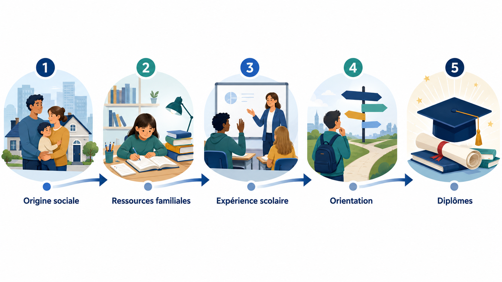
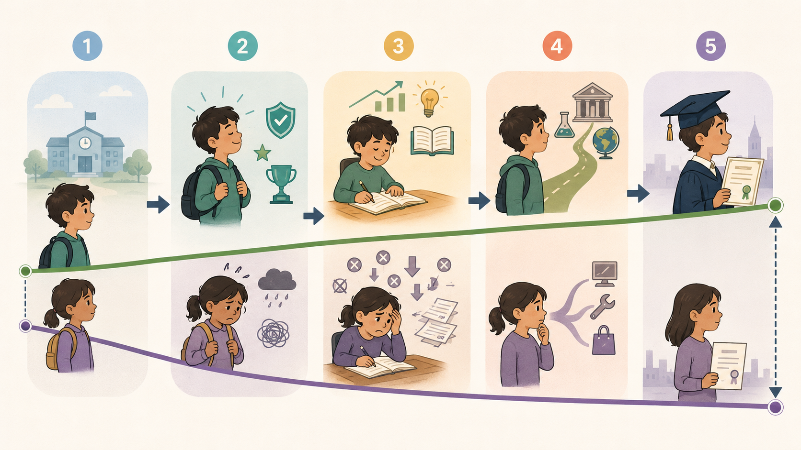
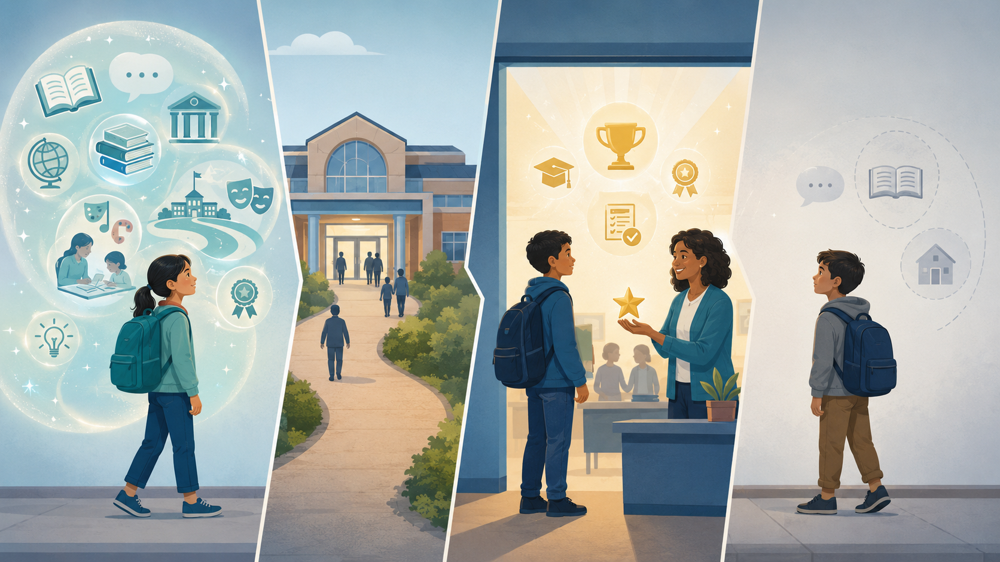
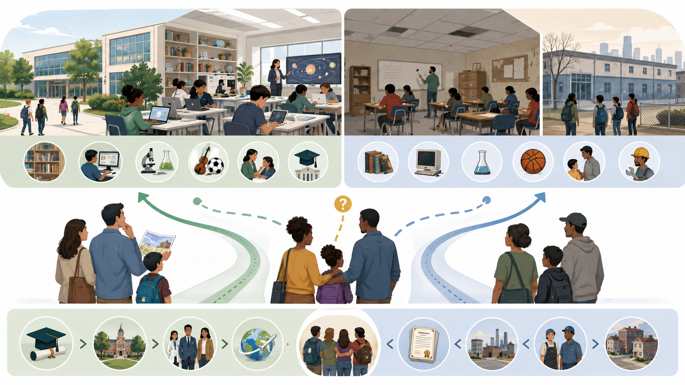
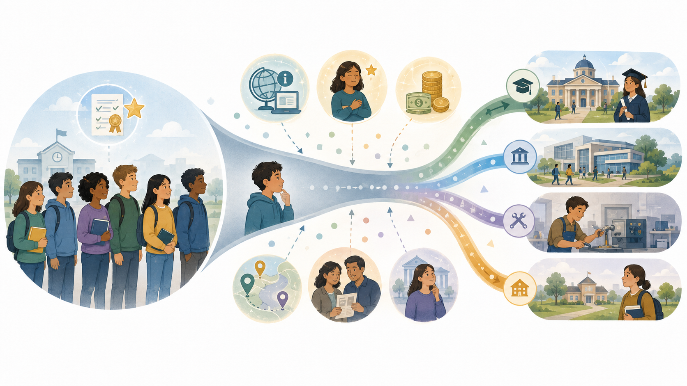

Dans cette page
Comprendre le problème Ce que montrent les données Explorer les données Parcours interactif Les grandes chaînes d’explication Étude et auteurs clés Ce que l’on peut affirmer avec prudence Trois idées reçues à dépasser Ce qu’il faut retenir Questions pour ouvrir le débat SourcesComprendre le problème
Les inégalités scolaires ne s’expliquent pas seulement par le travail personnel ou par le talent individuel. Elles s’enracinent aussi dans des conditions sociales très différentes : ressources familiales, langage, logement, accès aux livres, confiance dans l’institution scolaire, orientation, ségrégation entre établissements et capacité à se projeter dans les études.
Quand on parle de réussite scolaire, on pense spontanément aux efforts de l’élève, à sa motivation, à la qualité des enseignants ou au fonctionnement de l’école. Ces éléments comptent évidemment. Un élève apprend, travaille, progresse, rencontre des adultes qui peuvent l’aider ou le décourager. Mais ces éléments ne suffisent pas à expliquer pourquoi, dans une même société, les trajectoires scolaires restent aussi liées au milieu social d’origine.
L’école est souvent présentée comme l’institution qui permet de corriger les inégalités de naissance. C’est une partie de sa promesse républicaine : permettre à chacun de progresser par l’apprentissage, l’effort et les diplômes. Mais l’école ne reçoit pas des élèves abstraits, identiques au départ. Elle accueille des enfants qui ont déjà vécu des expériences sociales différentes, qui disposent de ressources familiales différentes, qui n’ont pas le même rapport au langage, aux livres, au temps, au travail scolaire ou à la confiance dans les institutions.

Comprendre les inégalités scolaires ne signifie donc pas nier la responsabilité individuelle, ni considérer que tout serait joué d’avance. Cela signifie regarder comment les conditions sociales modifient les probabilités de réussite, les marges de choix, les ressources disponibles et les obstacles rencontrés. L’enjeu n’est pas de dire que les élèves sont déterminés par leur origine sociale. L’enjeu est de comprendre pourquoi certains parcours sont rendus plus probables que d’autres.
Ce que montrent les données
Les données disponibles montrent que les écarts scolaires apparaissent tôt et qu’ils se maintiennent souvent au fil de la scolarité. La DEPP observe par exemple qu’à l’entrée en sixième, les compétences en français diffèrent fortement selon l’origine sociale. En 2022, 41 % des enfants ayant des parents cadres ont de bons résultats en français, contre 10 % des enfants d’ouvriers et 6 % des enfants d’inactifs. À l’inverse, 45 % des enfants d’inactifs et 26 % des enfants vivant dans un ménage ouvrier sont en difficulté, contre 5 % des enfants de cadres supérieurs.1
À l’entrée en sixième, 41 % des enfants de cadres ont de bons résultats en français, contre 10 % des enfants d’ouvriers et 6 % des enfants d’inactifs. 1
Dans PISA 2022, l’écart entre les élèves les plus favorisés et les plus défavorisés reste très marqué en mathématiques. 2
Parmi les 25-29 ans, 36 % des enfants d’employés et d’ouvriers déclarent un diplôme du supérieur, contre 67 % des enfants de cadres, professions intermédiaires ou indépendants. 4
Ces données ne signifient pas que l’origine sociale détermine mécaniquement la trajectoire de chaque élève. Elles indiquent plutôt qu’à l’échelle d’une population, les conditions sociales modifient fortement les probabilités de réussite scolaire. Certains élèves déjouent les statistiques, réussissent malgré des conditions défavorables ou échouent malgré un environnement favorisé. Mais l’existence d’exceptions ne supprime pas la force des tendances collectives.
Point de méthode. Les moyennes par groupe ne disent jamais ce qu’un élève particulier va devenir. Elles permettent de mesurer des écarts collectifs. Une politique éducative juste doit donc tenir ensemble deux idées : chaque élève peut progresser, mais tous les élèves ne partent pas avec les mêmes ressources ni les mêmes obstacles.
Explorer les données
Le graphique ci-dessous permet d’explorer plusieurs données : les écarts de compétences en français à l’entrée en sixième, le poids des écarts sociaux dans PISA 2022, et l’accès au diplôme du supérieur selon le milieu social.
Graphique interactif — Origine sociale et résultats scolaires
Parcours interactif : comment les inégalités s’accumulent
La carte précédente était trop abstraite car elle séparait les facteurs les uns des autres. Le module ci-dessous propose une lecture plus didactique : il suit un parcours scolaire. À chaque étape, on peut voir ce qui peut soutenir l’élève, ce qui peut le freiner, et comment un petit écart peut se transformer en écart durable.
Clique sur une étape du parcours
1. Départ social
Les élèves n’arrivent pas à l’école avec les mêmes ressources sociales, culturelles et matérielles. Certains ont déjà une forte familiarité avec les livres, le vocabulaire scolaire, les sorties culturelles ou les attentes de l’école. D’autres doivent apprendre les contenus scolaires en même temps que les codes implicites qui les accompagnent.
Ce qui peut aider
Avoir accès à des livres, entendre un vocabulaire varié, être accompagné dans les devoirs, connaître les attentes scolaires, pouvoir parler facilement avec les enseignants.
Ce qui peut freiner
Un rapport plus distant à l’école, moins de ressources disponibles, moins d’information, moins de temps parental disponible ou une moindre familiarité avec les codes scolaires.

Les grandes chaînes d’explication
Le capital culturel et les ressources invisibles
L’école repose fortement sur le langage : comprendre une consigne, formuler une réponse, justifier un raisonnement, lire un texte, expliquer une démarche, rédiger, argumenter. Or tous les élèves n’arrivent pas à l’école avec la même familiarité avec ce langage scolaire. Certains enfants ont grandi dans des environnements où les livres, les discussions abstraites, les sorties culturelles ou les codes scolaires sont très présents. D’autres doivent apprendre simultanément les contenus scolaires et les codes implicites qui permettent de comprendre ce que l’école attend.

Ce mécanisme ne signifie pas que certaines familles seraient “défaillantes”. Il signifie que l’école valorise certaines formes de langage, de culture et de comportement qui sont inégalement distribuées socialement. Lorsqu’un enfant maîtrise déjà une partie de ces codes, il peut sembler plus “naturellement” à l’aise. Mais cette aisance est aussi le produit d’une socialisation.
Les conditions matérielles d’apprentissage
Les conditions matérielles pèsent aussi sur les apprentissages. Un élève ne travaille pas dans les mêmes conditions selon qu’il dispose d’une chambre calme, d’un ordinateur, d’une connexion stable, de livres, d’un bureau, d’un adulte disponible pour l’aider ou d’un temps de transport limité. Le logement, les revenus et la stabilité familiale peuvent influencer le sommeil, la concentration, la capacité à faire les devoirs ou à participer à des activités extrascolaires.
La ségrégation scolaire
Les inégalités scolaires ne se jouent pas seulement entre familles. Elles se jouent aussi entre établissements. Certains collèges ou lycées concentrent davantage d’élèves socialement favorisés, tandis que d’autres concentrent davantage de difficultés sociales. L’indice de position sociale, calculé par la DEPP, permet de résumer les conditions socio-économiques et culturelles moyennes des familles des élèves d’un établissement.5

Cette concentration peut avoir des effets importants. Elle peut modifier les conditions d’enseignement, les attentes des familles, l’offre d’options, les ressources disponibles, la stabilité des équipes, l’image de l’établissement, la confiance des élèves ou les stratégies d’évitement scolaire. L’enjeu n’est donc pas seulement de regarder les résultats individuels, mais aussi la composition sociale des établissements.
L’orientation et l’autocensure
L’orientation constitue un moment décisif de production des inégalités. Deux élèves ayant des résultats proches ne formulent pas toujours les mêmes vœux, ne reçoivent pas les mêmes conseils, ne se sentent pas également légitimes dans les mêmes filières et ne disposent pas toujours des mêmes informations. Les familles les plus familières du système scolaire connaissent souvent mieux les filières, les établissements, les options, les stratégies de candidature et les conséquences de chaque choix.

L’autocensure joue ici un rôle important. Certains élèves renoncent à des filières sélectives non parce qu’ils n’en auraient pas les capacités, mais parce qu’ils ne s’y imaginent pas, parce qu’ils n’ont pas de modèle proche, parce qu’ils craignent le coût, l’éloignement, l’échec ou le sentiment de ne pas être à leur place.
L’enseignement supérieur et la poursuite des écarts
Les inégalités ne disparaissent pas après le baccalauréat. Elles se prolongent dans l’enseignement supérieur, dans le choix des filières, dans l’accès aux formations sélectives, dans la capacité à financer les études, dans la mobilité géographique et dans l’accès aux réseaux professionnels. Le ministère de l’Enseignement supérieur indique qu’en moyenne sur 2021, 2022 et 2023, 36 % des enfants d’employés et d’ouvriers âgés de 25 à 29 ans déclarent détenir un diplôme d’enseignement supérieur, contre 67 % des enfants de cadres, de professions intermédiaires ou d’indépendants.4
Étude et auteurs clés
Repère scientifique — Bourdieu, Passeron et la reproduction sociale
Pierre Bourdieu et Jean-Claude Passeron ont fortement marqué l’analyse des inégalités scolaires. Leur travail a contribué à montrer que l’école ne transmet pas seulement des savoirs neutres : elle valorise aussi des manières de parler, d’écrire, de se comporter, de se projeter et de comprendre les attentes scolaires qui sont inégalement distribuées selon les milieux sociaux.
L’intérêt de cette approche est de déplacer le regard. Elle ne dit pas que les élèves populaires seraient moins capables. Elle montre que l’école peut transformer des différences sociales en différences scolaires, puis en différences de diplôme. Ce mécanisme est puissant parce qu’il peut donner une apparence de mérite individuel à des écarts qui sont aussi liés à des ressources sociales inégalement réparties.
Mais cette approche doit être utilisée avec prudence. Elle ne signifie pas que tout serait joué d’avance, ni que l’école ne pourrait rien changer. Elle montre plutôt que l’école ne peut réduire les inégalités que si elle prend au sérieux les écarts de ressources, de codes et de conditions d’apprentissage. Les travaux plus récents du CNESCO insistent aussi sur la diversité des formes d’inégalités scolaires : résultats, orientation, diplômes, ressources disponibles dans les établissements et rendement des diplômes sur le marché du travail.6
Ce que l’on peut affirmer avec prudence
On peut affirmer que l’origine sociale reste fortement associée aux parcours scolaires. Les données de la DEPP, de l’INSEE, de l’OCDE et du CNESCO convergent : les écarts de résultats, d’orientation et d’accès aux diplômes ne sont pas distribués au hasard. Ils sont liés aux ressources sociales, économiques et culturelles dont disposent les élèves et leurs familles.
On peut aussi affirmer que ces liens passent par plusieurs mécanismes. Le capital culturel, le logement, les revenus, l’accès à l’information, la ségrégation scolaire, l’orientation et la confiance scolaire interagissent. Aucun de ces facteurs n’explique tout à lui seul. Mais leur accumulation peut produire des trajectoires très différentes.
En revanche, il faut éviter d’affirmer que l’origine sociale détermine entièrement le destin scolaire. Des élèves réussissent dans des conditions difficiles, des enseignants transforment des trajectoires, des établissements produisent de la valeur ajoutée, des politiques publiques peuvent réduire certains écarts. L’enjeu est donc de comprendre les probabilités sociales sans enfermer les individus dans leur origine.
Trois idées reçues à dépasser
“Quand on veut, on peut”
Cette phrase contient une part de vérité : la motivation, l’effort et la persévérance comptent. Beaucoup d’élèves progressent parce qu’ils travaillent, parce qu’ils sont accompagnés, parce qu’ils rencontrent des adultes qui croient en eux. Mais cette phrase devient injuste si elle oublie que tous les élèves ne disposent pas des mêmes conditions pour vouloir, travailler et se projeter.
“L’école est neutre socialement”
L’école vise l’égalité et transmet des savoirs communs. Mais elle n’est pas socialement neutre dans ses effets. Elle utilise des formes de langage, des attentes, des exercices, des codes et des modes d’évaluation qui peuvent être plus familiers à certains élèves qu’à d’autres. Elle peut donc corriger des inégalités, mais aussi en hériter et parfois les renforcer.
“Le mérite suffit à expliquer les parcours”
Le mérite existe, mais il n’explique pas tout. Deux élèves peuvent fournir des efforts comparables sans disposer des mêmes ressources, des mêmes informations, du même environnement de travail ou des mêmes encouragements. Une approche plus juste consiste à reconnaître l’effort individuel tout en regardant les conditions sociales qui rendent cet effort plus ou moins efficace.
Ce qu’il faut retenir
Les inégalités scolaires ne signifient pas que les élèves seraient enfermés dans leur origine sociale. Elles montrent qu’à l’échelle d’une population, les conditions sociales influencent les ressources, les obstacles, les choix d’orientation, la confiance scolaire et les chances d’accéder à certains diplômes.
L’école peut réduire des inégalités, mais elle ne peut pas faire comme si tous les élèves arrivaient avec les mêmes ressources. Une politique éducative réellement égalitaire ne consiste pas seulement à traiter tout le monde de la même manière. Elle doit aussi identifier les écarts de conditions et donner davantage de ressources à celles et ceux qui rencontrent le plus d’obstacles.
Comprendre les inégalités scolaires permet donc de dépasser l’opposition simpliste entre mérite individuel et déterminisme social. Les élèves agissent, progressent et choisissent, mais ils le font dans des contextes sociaux qui ne leur offrent pas les mêmes appuis.
Questions pour ouvrir le débat
L’école peut-elle réduire les inégalités sociales si les conditions de vie des élèves restent très différentes ?
Le mérite scolaire peut-il être pensé indépendamment des ressources familiales et du capital culturel ?
Une école plus juste doit-elle traiter tous les élèves de la même manière ou donner davantage à ceux qui rencontrent le plus d’obstacles ?
Comment aider les élèves sans enfermer les familles populaires dans une image déficitaire ?
À quel moment l’orientation devient-elle un mécanisme de reproduction sociale ?